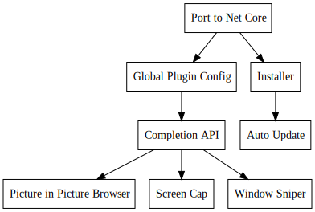

Day69 - Popup Tool Bar
Prep work for a new utility bar project
2019-04-19

Today I revived an old project to build a summonable command bar utility. The basic idea is to build an app which is summonable via a key binding which presents a command bar at the top of whatever window I am looking at.

Then when I type I get autocomplete results for a list of simple utilities. Initially I will just integrate my window sniper but I could imagine including a number of utilities such as a picture in picture browser window, a web search tool, and a simple calculater just to name a few.
The current version of the utility looks like this:

The window is slightly transparent and shows completion results underneath the text bar and automatically updates these results as you type. I spent today working on the initial work to revive the tool by porting it to .net core and tearing out the non functional bits. I will write up this work more once I have finished it fully. After the app is up and running again I will look into designing a plugin api so that any application can hook into the completions and command list.
I had a long day today at work and am feeling pretty drained so I'm going to leave it at that for today.
Till tomorrow,
Keith